Overview of Energy Reporting
The Energy Reporting extension allows you to generate reports, such as energy consumption, emission, cost, budget or performance, that display details of various facilities, such as buildings, business complexes or manufacturing plants.
To work with energy reports, you must install the Energy and Power Reporting Templates extension and add it to a management station project.
The Energy Reporting application uses logical entities known as managed meters to obtain the consumption details for various media, such as electricity, gas, or water. The consumption reports display the data from all the related managed meters even if you do not have the required scope rights for some of the managed meters.
The extension Energy and Power Reporting Templates provides templates that allow you to work with the following report types:
Load Profile Report
Load Profile is a WSI based report. It displays the power of an interval for a selected period.
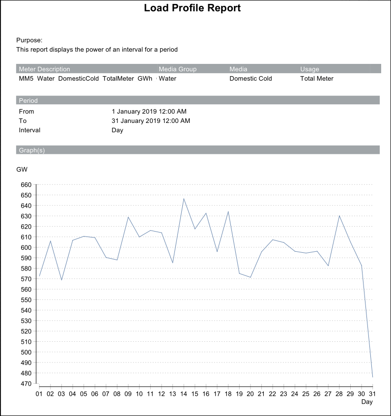
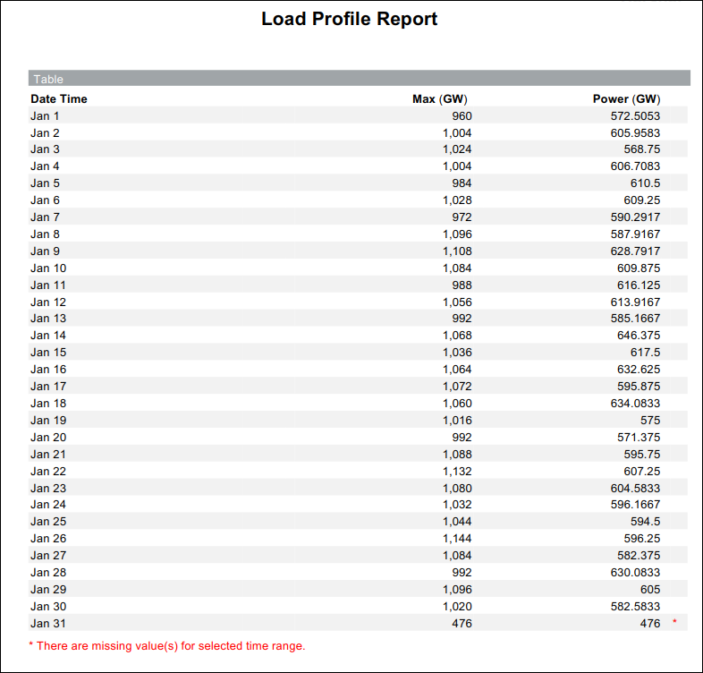
Max Power Report
Max Power is a cache based report which displays the max value of an interval for a period.
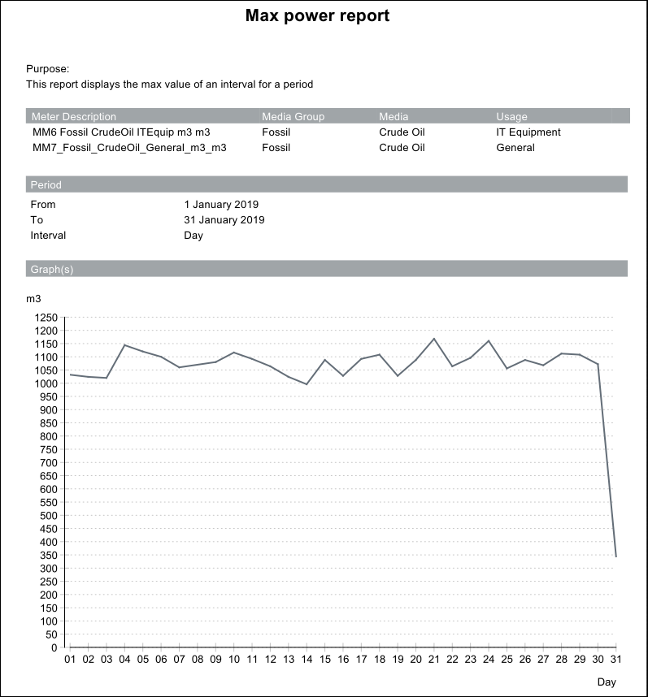
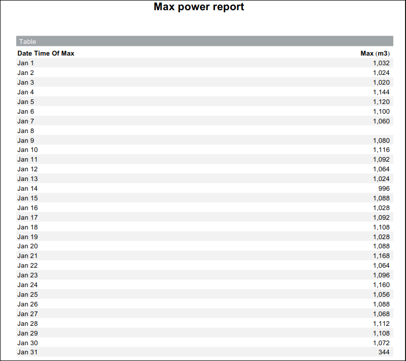
Consumption Cost Report
The Consumption Cost Report provides information on the total energy cost, energy cost per media such as coal, nuclear, solar or wind.
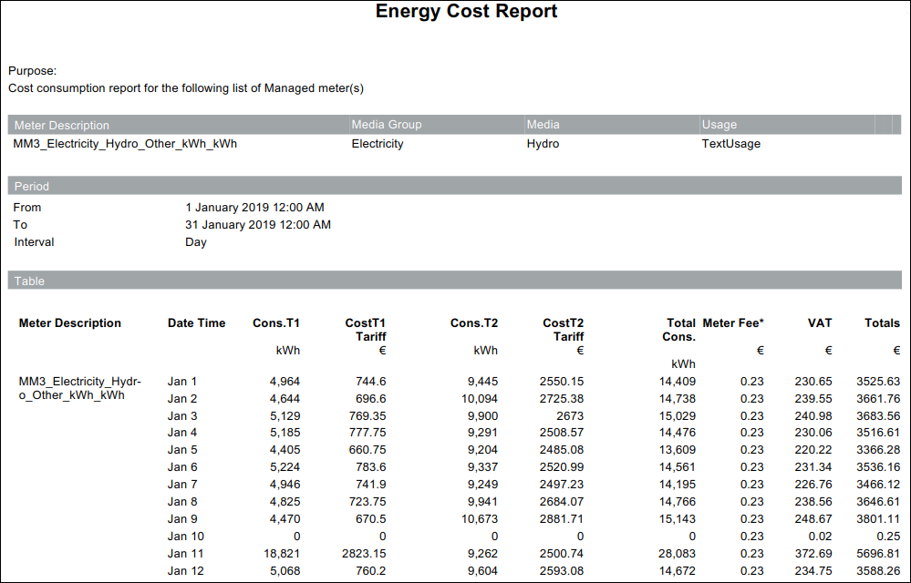
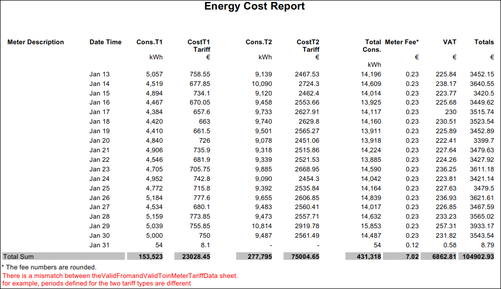
The following information displays in the report.
Name | Description |
Meter Description | Description of the managed meter for which the cost report is generated |
Media Group | Media group to which the managed meter is associated |
Media | Type of media which is associated with the media group |
Usage | Purpose of usage of the media and media group in the managed meter. |
Period | Time period and interval for which the cost report is generated |
Cons. T1 Tariff | Consumption of the managed meter during the T1 time period. |
Cost T1 Tariff | Cost of consumption during the T1 time period. |
Cons. T2 Tariff | Consumption of the managed meter during the T2 time period. |
Cost T2 Tariff | Cost of consumption during the T2 time period. |
Total Cons | Total consumption of the managed meter during the T1 and T2 time periods. |
MeterFee | Amount charged by the power supplier towards the rental of the meter. If the Interval selected is Week, then the Meter Fee calculation on a weekly basis would be as follows = If the Interval selected is Quarter, then the Meter Fee calculation on a quarterly basis would be as follows If the Interval selected is Half Year, then the Meter Fee calculation on a half-yearly basis would be as follows = If the Interval selected is Year, then the Meter Fee calculation on a yearly basis would be as follows = |
VAT | Amount of Value Added Tax applied on the bill amount. The amount of VAT is calculated as follows: |
Totals | Total cost that includes the sum of the following:
The total cost is calculated as follows: |
Consumption Emissions Report
Consumption Emissions Report provides information on the quantum of emission released into the environment due to the energy generation activities from the various sources of media.
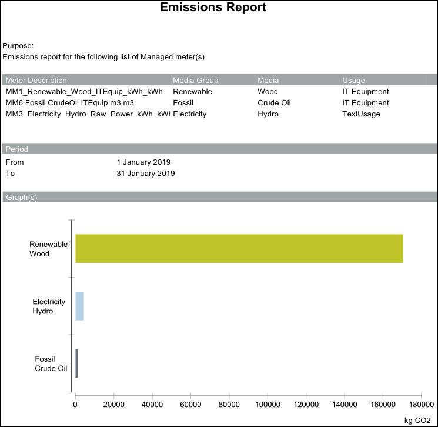
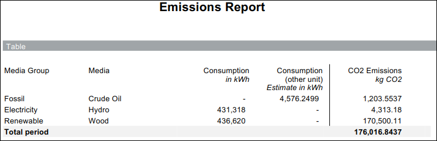
The following information displays in the report.
Name | Description |
Media Group | Media group to which the managed meter is associated |
Media | Type of media which is associated with the media group |
Consumption (in kWh) | Consumption of the managed meter in kWh units |
Consumption (other unit) | Consumption of managed meter converted to kWh units from any other unit of measurement. |
CO2 Emissions | Quantum of emission released in the environment on generating power from a specific media. The CO2 value will be displayed as per the unit specified in the CO2 unit display field in Configuring Additional Energy Report Parameters. Emission is calculated as per following:
If output unit of the managed meter is other than Wh, KWh, or MWh then Emission = (Consumption * Energy Factor) * Emission Factor * Transport Factor. |
Consumption Performance Report
Consumption Performance Report provides information on the total energy consumption for each managed meter along with the surface covered by the managed meter and the ratio between the consumption and the surface covered.
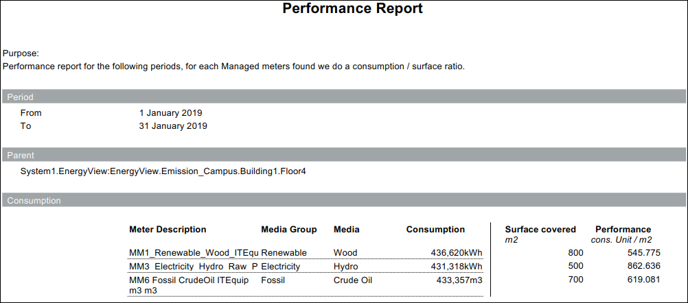
The following information displays in the report.
Name | Description |
Period | The time period for which the Performance report is generated. |
Parent | The managed meter or the aggregator for which the performance is to be derived. |
Meter Description | Description of the managed meter |
Media Group | Media group to which the managed meter is associated |
Media | Type of media which is associated with the media group |
Consumption | Consumption of the managed meter |
Surface covered (m2) | Surface area covered by the managed meter |
Performance cons. Unit/m2 | Ratio between the consumption and surface covered by the managed meter. It is calculated as: Consumption/Surface covered |
Consumption Budget Report
Consumption Budget Report allows you to compute the difference between the actual consumption and the budgeted consumption for the specified month and year.
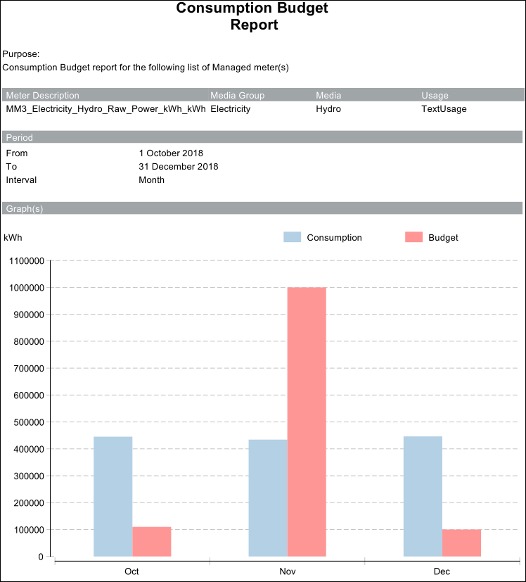
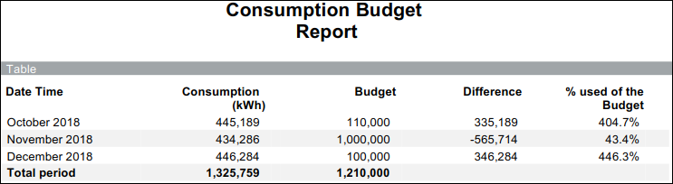
The following information displays in the report.
Name | Description |
Date Time | Displays the month and year for which the budget is computed. |
Consumption | Consumption of the managed meter for the specified month and year |
Budget | Budgeted consumption for the specified month and year |
Difference | Difference between the actual consumption and the budgeted consumption for the specified month and year. |
% used of the Budget | Displays the value according to the configuration in Budget % displayfieldinConfiguring Additional Energy Report Parameters. |
Consumption HDD Regression Line Report
The Consumption HDD Regression Line Report provides the ratio of energy consumption to the actual Heating Degree Days (HDD).
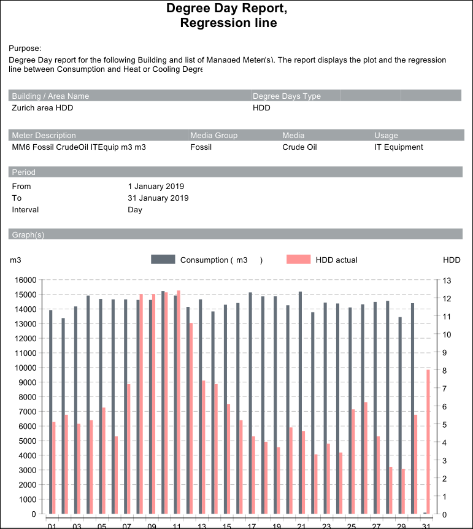
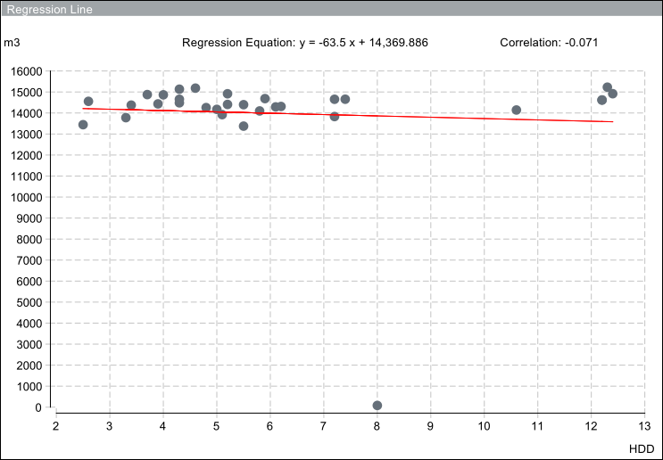
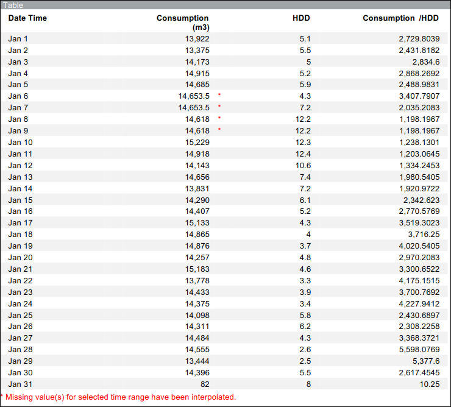
To configure this report you must specify values in the AreaIDs, HDD_<Area>, CDD_<Area> worksheets in the EnergyReportsExternalSettingHDD.xlsx file.
Name | Description |
Date Time | Displays the time interval according to which the data is displayed. The values are displayed on a daily, monthly, or yearly basis. |
Consumption | Displays the consumption according to the selected interval. |
HDD | Displays the Heating Degree Days (HDD) values according to the selected time interval. |
Consumption/ HDD | Displays the ratio of consumption with the HDD value according to the selected time interval. |
Consumption Energy Signature Report
The Consumption Energy Signature Report provides the graphical and tabular representation of energy consumption with the outside air temperature.
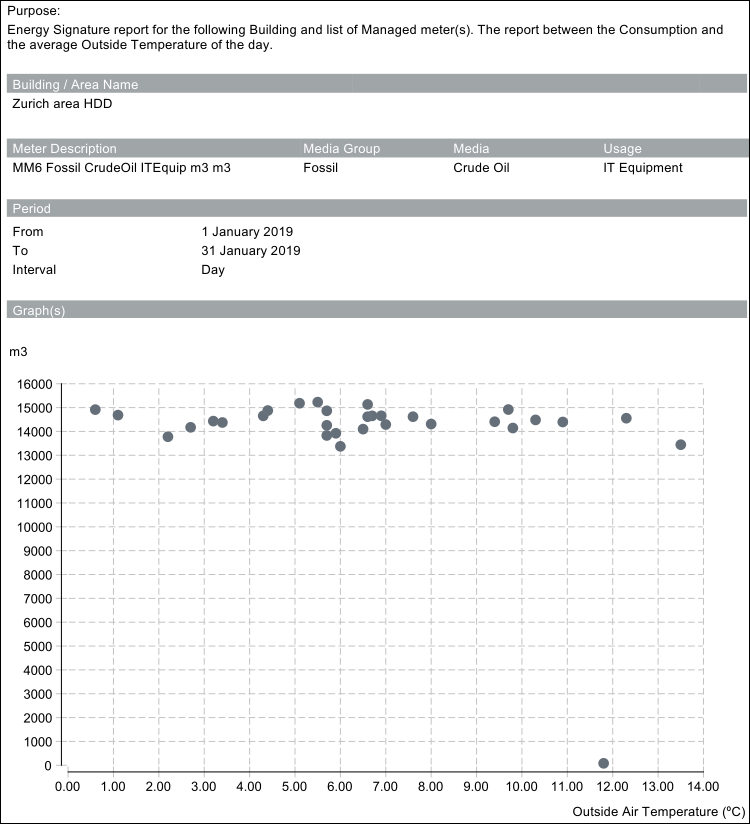
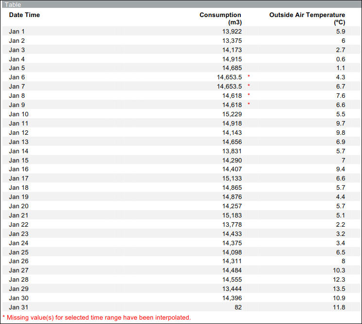
To configure this report you must specify values in the AreaIDs, HDD_<Area>, CDD_<Area> worksheets in the EnergyReportsExternalSettingHDD.xlsx file.
Name | Description |
Date Time | Displays the date with information on the energy consumption and the outside air temperature on that particular date. |
Consumption | Displays the energy consumption on a daily basis for the specific date. |
Outside Temperature | Displays the average outside air temperature on a specific date. |
Consumption Degree Days Corrected Report
The Consumption Degree Days Report provides the graphical and tabular representation of the corrected energy consumption with the degree days.
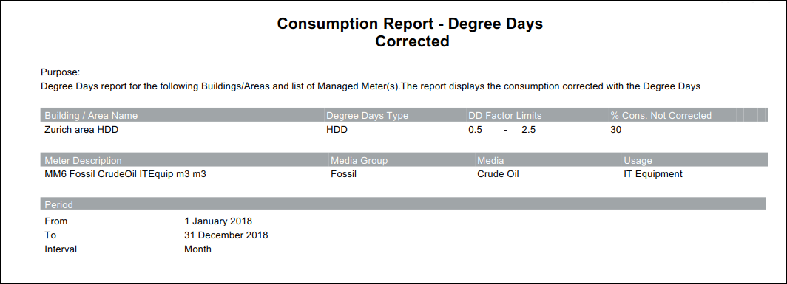
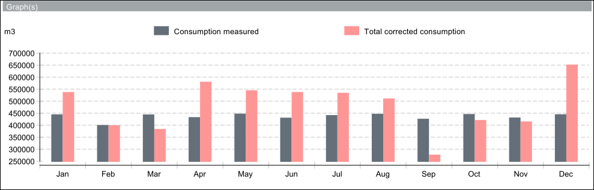
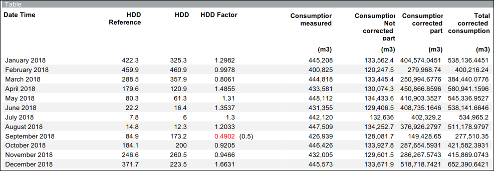
To configure this report you must specify values in the AreaIDs, HDDReference_<Area>, CDDReference_<Area>, HDD_<Area>, CDD_<Area> worksheets in the EnergyReportsExternalSettingHDD.xlsx file.
Name | Description |
Date Time | Displays the information as per the specified time interval. |
HDD Reference | Displays the average value of HDD for the last 25 years. |
HDD | Displays the value of the HDD for the specified time interval. |
HDD Factor | Displays the ratio of HDD reference to the HDD. |
Consumption | Displays the energy consumption for the specified time period and according to the specified interval. |
Consumption Not Corrected | Displays the value of the consumption that will not be corrected by the degree days factor. It is calculated using the following formula. (consumption * % of consumption corrected / 100) |
Consumption Corrected | Displays the value of the consumption that will be corrected by the degree days factor. It is calculated using the following formula. (consumption – consumption not corrected) / HDD factor |
Consumption Total | Displays the aggregate value of the consumption corrected by the degree days factor and the consumption not corrected by the degree days factor. It is calculated using the following formula. (consumption not corrected + consumption corrected) |
Consumption_PIE Report
The Consumption Pie report is executed only for those managed meters having media group as Electrical. It provides a comparison between the consumption of all the managed meters below the selected aggregator node and usage of those meters.
In the following example, the report is executed by selecting the campus aggregator node.
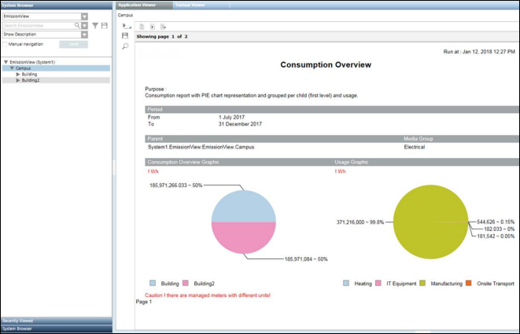
Consumption Node And Usage Report
Consumption Node and Usage report displays the consumption details of meters grouped either according to their usage and/or by their first level hierarchy. The report is executed from aggregator nodes in a view such as a building or floor.
The data displayed in the report depends on the option selected in the Parameter dialog box. The options include:
Summary Usage
Groups and displays the consumption details of meters according to the usage.
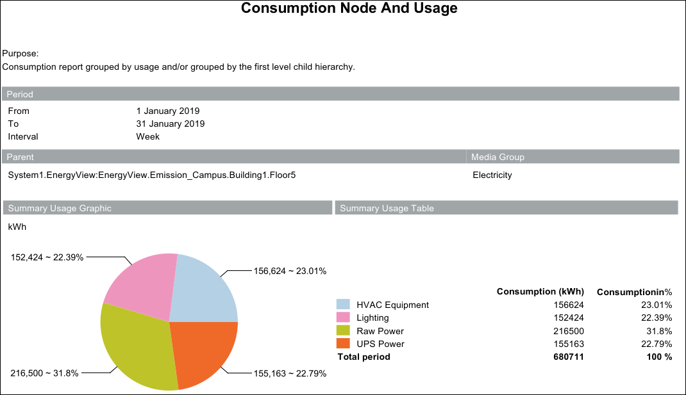
Details Usage
Groups the consumption details of meters according to usage and as per the selected time interval for the specified time period.
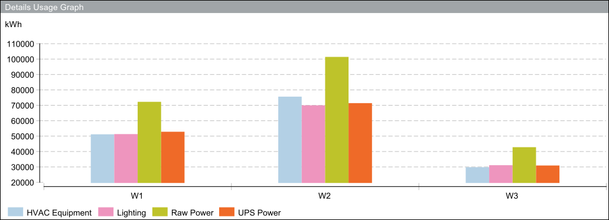
Summary Node
Displays the consumption details of all the first level meters in the hierarchy present below the aggregator node.
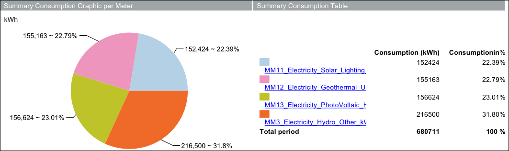
Details Node
Displays the consumption details of all meters present below the aggregator node according to the selected time interval for the specified time period.
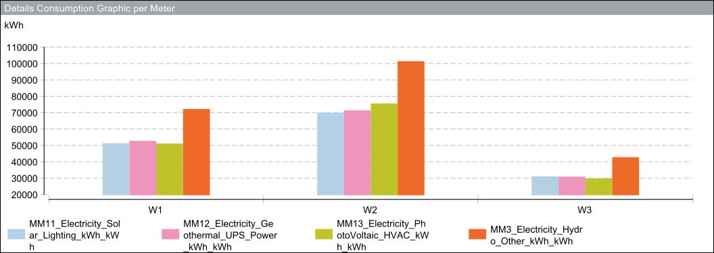
All
Displays the information according to Summary Usage, Details Usage, Summary Node, and Details Node.
Consumption_Max_Power Report
The Consumption and Max Power report provides information on the energy consumption and max power for a managed meter or an aggregator node for a specified time period and interval.
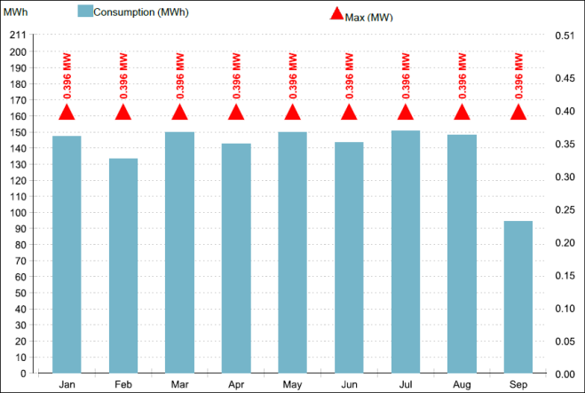
Power Usage Effectiveness Report
The Power Usage Effectiveness Report provides the ratio of energy consumption by the IT equipment within a facility with the total energy consumption of the entire facility for the specified time period and interval. This report is applicable only for managed meters with electricity as the media group.
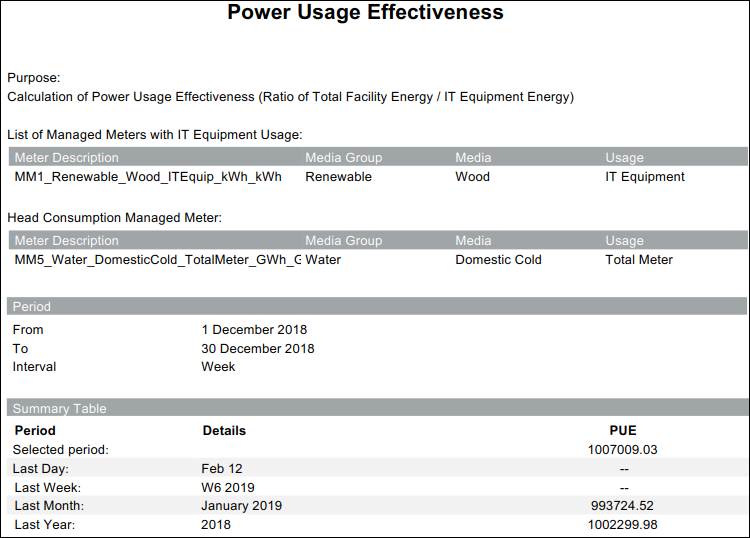
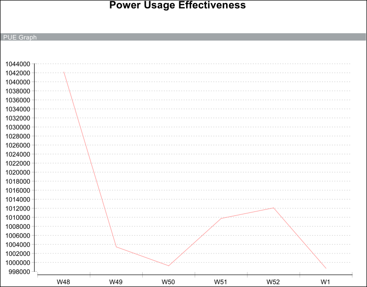
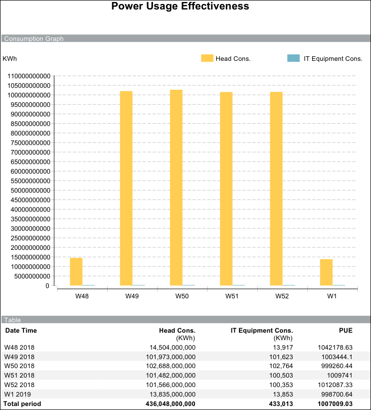
To execute the PUE report, it is necessary to have a managed meter whose usage is set to IT Equipment in the view hierarchy. For more information, see Managed Meters Workspace.
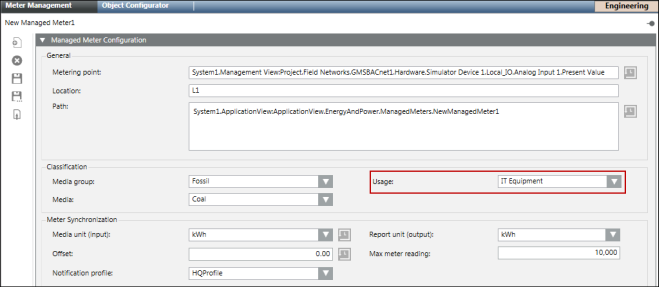
This report is divided into the following sections:
- List of Managed Meters with IT Equipment Usage: Displays the list of managed meters that measure the energy consumption of the IT equipment.
- List of Managed Meters with All Usage/Head Consumption Managed Meter: The information displayed in this section depends on the usage value specified in the Total Meter usage number field in the Parameter dialog box corresponding to the PUE Report Settings. For more information, see Configuring the Advanced Reporting Configuration Page for Energy Reports.
- Period: Time period for which the report is generated along with the interval for which the data is displayed.
- Summary Table: This table displays the power usage effectiveness (PUE) for the last day, last week, last month, and last year with respect to the date on which the report was generated. For example, if the report is generated on 14th December, 2017, the following information displays:
- Last Day : 13th December, 2017
- Last Week: W49 2017
- Last Month: November 2017
- Last Year: 2016
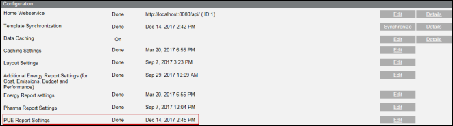
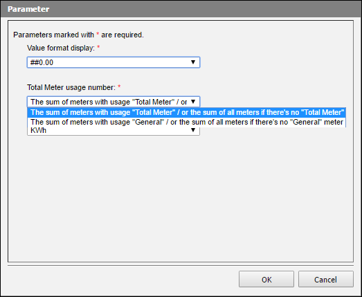
The PUE value is calculated as follows: Consumption of managed meters displayed in the List of Managed Meters with All Usage/Head Consumption Managed Meter section / consumption of managed meters displayed in the List of Managed Meters with IT Equipment Usage section.
- PUE Graphics: Displays a line chart with the PUE on the Y-axis and report period on the X-axis distributed according to the selected interval.
- Consumption Graphics:Displays a bar chart comparing energy consumption by the IT equipment with the energy consumption of either the managed meters with usage as General/Total meter or All depending on the presence of the meters in the hierarchy.